扉页

版权页
京权图字：01-2013-7809
Published by arrangement with Oxford University Press for sale in the People's Republic of China only and not for export therefrom. This edition is for sale in the mainland of China only, excluding Hong Kong SAR, Macao SAR and Taiwan.
© Oxford University Press 2008
Oxford is a registered trademark of Oxford University Press
图书在版编目（CIP）数据
萨莉的手机：英汉对照／（新西兰）林多普（Lindop, C.）著；（英）里斯（Reece, G.）绘；赵路路译．—北京：外语教学与研究出版社，2013.11
（书虫·牛津英汉双语读物）
书名原文：Sally's phone
ISBN 978-7-5135-3759-9
Ⅰ．①萨… Ⅱ．①林…②里…③赵… Ⅲ．①英语—汉语—对照读物②短篇小说—新西兰—现代 Ⅳ．①H319.4：I
中国版本图书馆CIP数据核字（2013）第271157号
出版人 蔡剑峰
责任编辑 陈海燕
封面设计 蔡 颖
出版发行 外语教学与研究出版社
社 址 北京市西三环北路19号（100089）
网 址 http://www.fltrp.com
版 次 2013年12月第1版
书 号 ISBN 978-7-5135-3759-9
制售盗版必究 举报查实奖励
版权保护举报电话：（010）88817519
内容简介
内容简介
你有手机吗？你会用手机给谁打电话？谁会给你打电话？你的生活离得开手机吗？
生活忙碌的萨莉有一部手机。她会接到很多电话，大部分是她的男朋友安德鲁打来的。安德鲁喜欢指点萨莉该做什么，该穿什么。
萨莉和安德鲁今晚要参加一个派对。“穿上你的蓝裙子。”安德鲁说。但是萨莉不能穿蓝裙子，因为那条蓝裙子脏了，所以她不得不去买一条新的。
但是萨莉购物的时候，她不只是买到了一条新裙子——她还遇到了一件改变她人生轨迹的事。
SALLY'S PHONE
SALLY'S PHONE
Do you have a phone? Who do you call? Who calls you? Can you live without your phone?
Sally has a phone, and a busy life. She gets many phone calls – mostly from her boyfriend, Andrew. Andrew likes telling Sally what to do – and what to wear.
Sally and Andrew are going to a party tonight. 'Wear your blue skirt', says Andrew. But Sally can't wear it – it's dirty, so she has to go shopping for a new one.
But when Sally goes shopping she gets more than just a new skirt – she gets something that will change her life.
目录
1 Morning
1 Morning
It is Thursday morning. Sally is in bed. Suddenly – Ring ring! Her phone is ringing – but where is it?
Sally gets out of bed and looks in her bag. No phone. She looks under the bed. No phone. Then she looks behind the door. There is her phone. Sally picks up her phone and answers it.
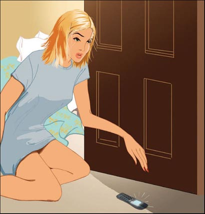
'Hello Sally, it's Andrew.'
Andrew is Sally's boyfriend. He has got a lot of money and a beautiful and expensive car.
'Andrew, it's only seven o'clock—'
'Don't forget, Sally – we're meeting Michael tonight. It's an important evening, because Michael's my new boss. Wear your blue skirt, Sally, I like that skirt. I must go now. See you at half past six. Bye.'
'But Andrew... Bye.'
'I can't wear the blue skirt,' Sally thinks. 'It's dirty. What can I wear?'
Sally is having breakfast with her mother and her brother Jack.
'I'm going out tonight,' Sally tells her mother. 'Andrew and I are meeting his new boss.'
'Andrew?' Jack says. 'Huh!'
'Oh be quiet, Jack,' Sally says. 'Andrew is very nice to me.'
'Nice?' Jack says. 'Huh! "Sally, I want a sandwich." "Yes, Andrew." "Sally, I don't like your hair." "No, Andrew, sorry Andrew." "Sally—"'
But then Sally stands up, and Jack runs out of the room.
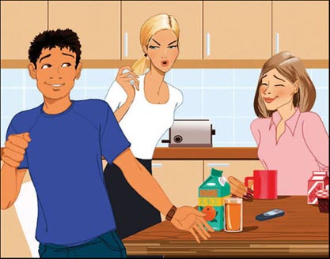
Sally gets on the train. There are a lot of people on the train. Most of them are talking on their phones.
'John? John! Get up and go to work. It's late!'
'Have you got my money? I need it today. I must have it today.'
'Remember – go to the supermarket tonight. Don't forget!'
And Sally is listening to Andrew.
'Sally, meet me at six o'clock, not at half past six. OK?'
'OK Andrew – but my blue skirt—'
'I must go, Sally – bye.'
Then the train goes into a tunnel. The people on the train can not talk on their phones. They must talk to the other people on the train.
'Hello, Max! How are you?'
'Oh, hello Graham! I'm very well.'
'Where are you working now, Lucy?'
'I'm in a new office in Bank Street.'
'Those are nice shoes, Jane.'
'Thank you, Mary.'
After three minutes, the train comes out of the tunnel. Everyone talks on their phones again.
'Hello? John? Are you out of bed now?'
Now Sally is at work. She is talking to her friend Claire, and she tells her about Andrew, Michael, and the blue skirt.
'It's OK, Sally,' Claire says. 'Let's go out at lunchtime. We can find a new skirt. You can wear it tonight.'
Later, Claire and Sally are having coffee with Louise. She works with them.
Ring ring! It is Andrew again.
'Hi, Sally. Look, meet me at the Bar Bogart, not the Cosmo Bar – OK? The Bar Bogart is nearer. Bye.'
'Bar Bogart,' Claire says. 'Mmm – that's nice.'
'Huh!' Louise says. 'Forget him, Sally. Who needs men? "Do this, do that, go there, don't go there." Huh!'
2 Lunchtime
2 Lunchtime
It is one o'clock. Sally and Claire are looking at skirts.
'Do you like this one, Sally?' Claire says.
'Yes, it's beautiful, but I never wear red.'
'Do you like red?' Claire asks.
'Yes, I do – but Andrew doesn't.'
'Well,' Claire says, 'it's a beautiful skirt. You like red. What do you want to do?'
Sally buys the skirt.
Claire goes back to work, but Sally wants a coffee. She goes into a café. She buys a coffee and sits down. Then she phones her mother.
'Hi, Mum. I've got a new skirt – it's beautiful! I want to wear it tonight.'
'What colour is it?'
'It's red.'
'That's nice. Red is a good colour for you,' says her mother.
Next to Sally, Paul is finishing his coffee. He phones his friend and talks to him. Then he stands up. The bag with the red skirt falls on the floor.
'Oh! I'm sorry,' Paul says. He puts down his phone and picks up the bag. 'Here's your bag.'
'That's OK,' Sally says. 'Thank you.' She smiles.
'What a nice smile!' Paul thinks.
Paul picks up his phone and goes out of the café. Sally finishes her coffee. She picks up her bag and her phone, and goes back to work.
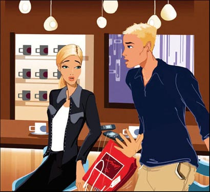
3 Afternoon
3 Afternoon
Paul is in his office.
Ring ring!
'What's that noise?' Paul thinks. He answers the phone. It is Andrew.
'Hello, Sally?'
'It's not Sally. It's Paul.'
'Paul? Paul who? Where's Sally?'
'Who's Sally? There's no Sally here.'
'Huh!'
Andrew finishes the call.
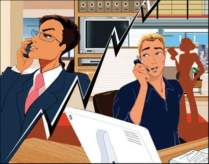
Paul wants to phone his mother. He finds 'Mum' on the phone, and presses the button.
'Hello, Mum. It's Paul.'
'Paul? Who's Paul? I'm not Paul's Mum. I'm Sally's Mum and Jack's Mum.'
'What's happening?' Paul thinks.
'What number is that?' he asks.
'It's 0783 491839.'
'I'm very sorry,' Paul says. 'It's the wrong number.'
'That's OK,' Sally's Mum says. 'What a nice voice!' she thinks.
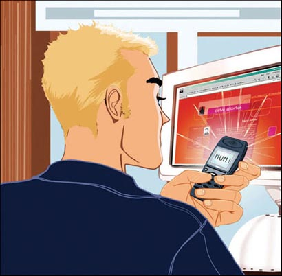
Sally is at work.
Ring ring!
'What's that noise?' Sally thinks. She answers the phone.
'Hello, is Paul there?'
'No, I'm sorry, this—'
'Can you give a message to him? This is his sister Katharine. There's a party at my house tonight. It's my birthday.'
'But I—'
'8 o'clock – OK? Bye.'
Sally talks to Claire and Louise.
'I've got a message for Paul – but who's Paul? Do you know a Paul, Claire?' she asks.
'No. What's the message?' Claire asks.
'It's his sister Katharine's birthday, and she's having a party tonight. Do you think it's a wrong number?'
'Yes, I think it is,' Claire says.
'Hey, Sally!' Louise says. 'Put on your red skirt and go to the party. Forget Andrew!'
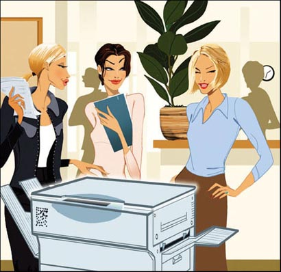
Paul talks to a friend at work.
'This is Sally's phone – and Sally's got my phone.'
'But who is Sally?'
'I don't know,' says Paul.
'Why don't you phone her?'
'What's my number?' Paul asks. 'I don't know my number.'
'Why not?'
'Because I never call my number!'
Paul phones his mother.
'Mum, what's the number of my phone?'
'Why do you want your phone number, Paul?'
'Because Sally's got my phone.'
'Who's Sally?' his mother asks.
'I don't know, but she's got my phone, and I've got her phone.'
'I don't understand.'
'I know,' says Paul. 'It doesn't matter. Have you got my number?'
'Here it is. 0781 644834.'
'Thanks, Mum.'
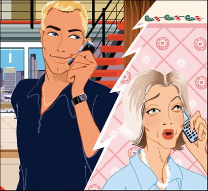
Paul phones Sally.
'Hello, Sally – this is Paul.'
'Paul – are you Katharine's brother?' Sally asks.
'Yes, that's right. And I've got your phone.'
'My phone? Oh – wait a minute. The Café Cuba at lunchtime? The bag on the floor?'
'Yes, that's right. Well, we need to change phones.'
'OK – where are you now, Paul?'
'In College Road. I work there.'
'I work in Manchester Street. Can we meet in Queen's Square?' Sally asks.
'OK. What time do you finish work?'
'At half past five.'
'Let's meet in Queen's Square at a quarter to six,' says Paul. 'Phone me then.'
'OK, Paul,' says Sally.
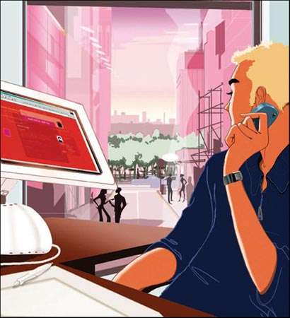
4 Evening
4 Evening
It is half past five. Sally puts on her new skirt.
'Do you like it, Louise?' she asks.
'Oh yes. It's very nice.'
It is twenty to six. Paul arrives in Queen's Square. He looks for Sally. Is that Sally? He can not remember. He phones Sally.
'Hello, Sally. It's Paul. I'm in Queen's Square.'
'Hello, Paul. I'm coming.'
There are lots of people in Queen's Square, and many of them are talking on phones.
Which is Paul? Sally can not remember. She phones Paul.
'Paul – have you got black hair?'
'No, I haven't.'
'Good!' Sally thinks.
'Have you got a book in your hand?' asks Sally.
'No, I haven't.'
'Good!' Sally thinks.
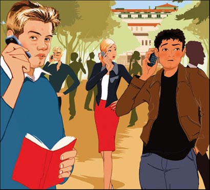
Sally cannot find Paul.
'Where are you, Paul?'
'I'm near the trees.'
Sally goes across the square to the trees.
'Are you Paul?' Sally says.
Paul looks at Sally. 'She's beautiful!' he thinks.
'Yes, I'm Paul.'
'He's nice!' Sally thinks.
'I'm Sally. So – we meet again.'
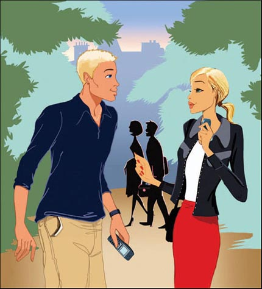
'I'm sorry about your phone, Sally. Here it is.'
'That's OK. Here's your phone, Paul.'
'Sally – would you like a drink? I want to say sorry.'
'OK, but I haven't got much time.'
Paul looks for a bar.
'Let's go to the Blue Moon. We can have a drink there.'
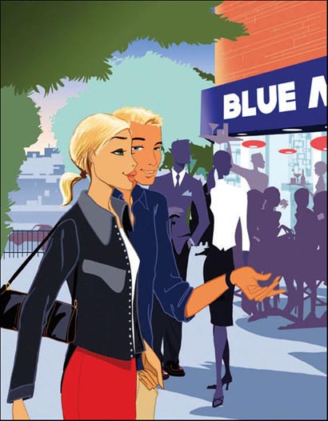
Paul and Sally are at the Blue Moon. Sally sits down at a table. Paul brings their drinks.
'Here's your drink, Sally. And I am sorry about your phone.'
'Forget it, Paul – it doesn't matter. Oh, I've got a message for you. It's from your sister Katharine.'
'From Katharine? What is it?'
'She says that it's her birthday today, and there's a party at her house.'
'Oh no!' Paul says. 'I always forget birthdays. What can I do?'
Sally looks across the square. Near the trees a woman is selling flowers.
'Buy some flowers for your sister, and take them to the party,' she says to Paul.
'Of course! That's the answer. Look, Sally – do you want to come to the party with me? Katharine always has good parties.'
'Well, I...' Sally says.
'Oh, I must tell you,' Paul says. 'I've got a message for you from Andrew. He says—'
'It doesn't matter, Paul,' says Sally. 'I don't want the message. I would like to go to the party with you. But I must do something before we go.'
Sally takes her phone out of her bag and turns it off.
In the Bar Bogart, Andrew phones Sally. Sally does not answer. 'Sally?' says Andrew. 'Sally? Answer me!'
Sally and Paul leave the Blue Moon.
'That's a nice skirt,' says Paul. 'I like red.'
Sally smiles at him.
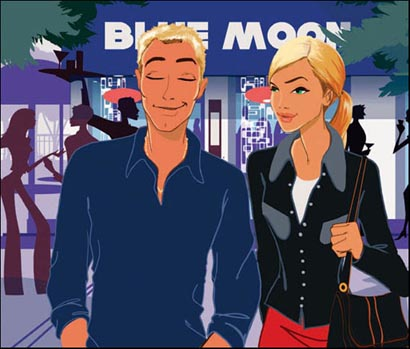
GLOSSARY 词汇表
GLOSSARY
词汇表
bar n. a place where people can buy and have drinks 酒吧
birthday n. the day when your age changes 生日
boss n. the person that you work for 上司，老板
boyfriend n. a man or boy that a girl likes and goes out with 男朋友
button n. a phone has buttons with numbers on 键，按钮
lunchtime n. the time (usually between 12 o'clock and 2 o'clock) when people stop work to have something to eat 午餐时间
message n. something you want to tell somebody 消息，留言
party n. a meeting of friends to eat, drink, talk, dance etc 聚会，派对
press v. push with your finger 按，压
ring v. make a sound like a bell (a telephone rings) （电话）响铃，鸣响
turn off stop something working 关掉，关上
ACTIVITIES 阅读练习
Sally's Phone
ACTIVITIES
阅读练习
ACTIVITIES
Before Reading
1 Look at the front and back covers of the book and choose the correct ending for these sentences.
1) The story happens...
a □ in the country.
b □ in the city.
c □ at sea.
2) The story happens...
a □ in 1950.
b □ in 2100.
c □ today.
2 Guess what happens.
At the end of the story Sally has got...
1) a new phone.
Yes □／No □
2) her old phone.
Yes □／No □
3) a new boyfriend.
Yes □／No □
4) a new brother.
Yes □／No □
5) a new car.
Yes □／No □
6) a new skirt.
Yes □／No □
ACTIVITIES
While Reading
1 Read Chapter 1. Are these sentences true (T) or false (F)?
1) In the morning, Sally's phone is behind the door.
2) Sally is meeting Jack tonight.
3) Michael is Andrew's boss.
4) Jack does not like Andrew.
5) Lucy is working in High Street.
6) Mary likes Jane's shoes.
2 Read Chapter 2 and answer the questions.
Where...
1) ... is Sally meeting Andrew?
2) ... does Sally go for a coffee?
Who ...
3) ... does not like red?
4) ... picks up Sally's bag?
3 Read the first half of Chapter 3. Who says or thinks these words?
1) 'Who's Sally? There's no Sally here.'
2) 'What a nice voice!'
3) 'It's my birthday.'
4) 'Put on your red skirt and go to the party.'
4 Read the second half of Chapter 3. Now answer these questions.
1) Why does Paul not know his phone number?
2) Who does Paul phone first?
3) What is the name of Paul's sister?
4) What do Paul and Sally need to do?
5) Where does Sally work?
5 Read the first half of Chapter 4. Are these sentences true (T) or false (F)?
1) Louise likes Sally's skirt.
2) Paul has got black hair.
3) Paul is waiting near the trees.
4) They go to the Bar Bogart for a drink.
6 Read the second half of Chapter 4, can you guess what happens?
1) Paul and Sally meet Andrew.
Yes □／No □
2) Andrew and Sally go to the Bar Bogart.
Yes □／No □
3) Paul and Sally go to Katharine's party.
Yes □／No □
4) Andrew phones Sally.
Yes □／No □
5) Sally phones Andrew.
Yes □／No □
6) Paul buys flowers for Katharine.
Yes □／No □
7) Paul buys flowers for Sally.
Yes □／No □
ACTIVITIES
After Reading
1 Put these sentences in the correct order. Number them 1-10.
a □ Paul finishes his coffee.
b □ Paul says 'I'm sorry,' and he gives the bag to Sally.
c □ She buys a coffee and sits down.
d □ She finishes her coffee and picks up her bag and phone.
e □ Then she goes to the café.
f □ When he stands up, Sally's bag falls on the floor.
g □ Sally goes to the shops with Claire and buys a skirt.
h □ Then he picks up a phone and goes out of the café.
i □ She goes back to work.
j □ She phones her mother and tells her about the new skirt.
2 What do you know about Sally? Write a description using these words.
live/mother/brother
go to work/train
work/friends/Claire and Louise
like/red
has got/boyfriend/Andrew
3 Who says this? Who do they say it to?
1) 'Sally, I don't like your hair.'
2) 'Bar Bogart. Mmm – that's nice.'
3) 'It's beautiful, but I never wear red.'
4) 'Red is a good colour for you.'
5) 'What's my number?'
4 Complete this summary of the story. Use these words:
Square buys party lunchtime afternoon picks up birthday boyfriend answer coffee
Sally's _________ Andrew phones her early in the morning. He wants to meet her that evening. At _________ Sally buys a new skirt with her friend Claire. Then Sally has a _________ in a café. When Sally's bag falls to the floor, Sally meets Paul. He _________ her bag, but he takes her phone – and Sally takes his phone. That _________, Andrew phones Sally – but he talks to Paul. Paul's sister wants to tell him about her _________ party – but she speaks to Sally. In the end, Paul phones Sally, and they meet after work in Queen's _________. Paul _________ some flowers for his sister, and he and Sally go to her _________. Andrew phones Sally, but she does not _________.
TRANSLATION 参考译文
TRANSLATION 参考译文
Sally's Phone
萨莉的手机
1 清晨
一个星期四的清晨，萨莉还在床上睡觉。忽然，丁零零！她的手机响了。可是手机在哪里呢？
萨莉起床看看自己的包，没有手机。她看了看床底下，还是没有。然后她又看了看门后面，才见到手机。萨莉捡起手机接电话。
“喂，萨莉，我是安德鲁。”
安德鲁是萨莉的男朋友。他很有钱，还有一辆漂亮昂贵的汽车。
“安德鲁，现在才7点钟……”
“别忘了，萨莉，我们今晚要见迈克尔。今天晚上很重要，因为迈克尔是我的新上司。穿上你的蓝裙子，萨莉，我喜欢那条裙子。我现在得挂电话了。6点半见。再见！”
“可是安德鲁……再见！”
“我不能穿那条蓝裙子，”萨莉心想，“它脏了。我应该穿什么呢？”
萨莉正和她妈妈、弟弟杰克一起吃早餐。
“我今晚要出去，”萨莉对妈妈说，“我和安德鲁要见他的新上司。”
“安德鲁？”杰克说，“哼！”
“不要这样，杰克，”萨莉说，“安德鲁对我很好。”
“好？”杰克说，“哼！‘萨莉，我要个三明治。’‘好的，安德鲁。’‘萨莉，我不喜欢你的发型。’‘是的，安德鲁，对不起，安德鲁。’‘萨莉……’”
这时萨莉站了起来，于是杰克溜出了房间。
萨莉上了地铁。车厢里的人很多，许多人都在打电话。
“约翰？约翰！起床去上班。时间不早了！”
“你拿到我的钱了吗？我今天需要钱。今天我必须得拿到钱。”
“记着今晚去趟超市。别忘了！”
萨莉正在接听安德鲁的电话。
“萨莉，我们改为6点见，不是6点半了。好吧？”
“好的，安德鲁，不过我的蓝裙子……”
“我得挂了，萨莉。再见！”
这时地铁开进了隧道。车厢里的人打不了电话了，只能跟周围的人聊天。
“嗨，马克斯！你好吗？”
“哦，你好，格雷厄姆！我很好。”
“你现在在哪里工作，露西？”
“我刚到银行街的一家新单位上班。”
“鞋子不错，简。”
“谢谢，玛丽。”
三分钟后，地铁开出了隧道。大家又开始打电话。
“喂？约翰？你现在起床了吗？”
现在萨莉在上班。她正在跟她的朋友克莱尔聊天，说到了安德鲁、迈克尔和蓝裙子的事儿。
“没事儿的，萨莉，”克莱尔说，“我们午餐时间出去逛逛，找一条新裙子吧。这样你晚上就可以穿了。”
过了一会儿，克莱尔和萨莉跟路易丝一起喝咖啡。路易丝是她俩的同事。
丁零零！又是安德鲁。
“喂，萨莉。听我说，今晚我们在博加特酒吧见面，不去科斯莫酒吧了——好吧？博加特酒吧更近一些。再见！”
“博加特酒吧，”克莱尔说，“嗯，那儿不错。”
“哼！”路易丝说，“别想他了，萨莉。谁需要男人？整天说‘干这，干那，去那儿，别去那儿。’呸！”
2 午餐时间
现在是下午1点钟。萨莉和克莱尔正在逛服装店看裙子。
“你喜欢这条吗，萨莉？”克莱尔问。
“喜欢，很漂亮，不过我从来不穿红色的。”
“你喜欢红色吗？”克莱尔问。
“喜欢，可安德鲁不喜欢。”
“唔，”克莱尔说，“这条裙子很漂亮，你又喜欢红色。你该怎么办呢？”
萨莉买下了这条裙子。
克莱尔回去上班了，但是萨莉想喝杯咖啡。她走进一家咖啡馆，要了一杯咖啡，坐了下来。然后她给妈妈打电话。
“喂，妈妈。我买了一条新裙子——很漂亮！我想今天晚上就穿这条。”
“是什么颜色的？”
“红色。”
“挺好的。红色很适合你。”她妈妈说。
在萨莉的旁边，是快要喝完咖啡的保罗。他给朋友打了个电话聊了一会儿，然后站起来。这时，装着红裙子的袋子掉在了地上。
“呀！对不起。”保罗说。他把手机放在桌子上，把袋子捡了起来。“给你袋子。”
“没关系，”萨莉说，“谢谢你。”她莞尔一笑。
“多美的笑容啊！”保罗心想。
保罗从桌子上拿起手机走出了咖啡馆。萨莉喝完咖啡，拿起她的袋子和手机，回去上班了。
3 下午
保罗在办公室里。
丁零零！
“什么声音？”保罗心想。他接起电话。是安德鲁。
“喂，萨莉？”
“我不是萨莉，我是保罗。”
“保罗？哪个保罗？萨莉呢？”
“谁是萨莉？这儿没有叫萨莉的。”
“哼！”
安德鲁挂断了电话。
保罗想给妈妈打个电话。他在手机通讯录里找到“妈妈”，然后按了通话键。
“喂，妈妈。我是保罗。”
“保罗？谁是保罗？我不是保罗的妈妈。我是萨莉和杰克的妈妈。”
“这是怎么回事？”保罗心想。
“您那边电话号码是多少？”他问。
“我这里电话是0783 491839。”
“真不好意思，”保罗说，“我打错了。”
“没关系。”萨莉的妈妈说。“多好听的声音啊！”她心想。
萨莉在上班。
丁零零！
“什么声音？”萨莉想。她接起电话。
“喂，是保罗吗？”
“不是，不好意思，我……”
“你能给他捎个信儿吗？我是他妹妹凯瑟琳。今晚在我家有个派对。今天是我的生日。”
“不过我……”
“今晚8点。告诉他好吗？再见！”
萨莉跟克莱尔和路易丝说起这件事。
“有人让我捎口信给保罗——可是谁是保罗？克莱尔，你认识一个叫保罗的人吗？”萨莉问。
“不认识。是什么口信啊？”克莱尔问。
“今天是他妹妹凯瑟琳的生日，今晚她要举办一个派对。你觉得是不是打错电话了？”
“是的，我想是打错了。”克莱尔说。
“嘿，萨莉！”路易丝说，“穿上你的红裙子去参加派对吧。别管安德鲁了！”
保罗与单位同事聊起这件事。
“这是萨莉的手机，而萨莉拿了我的手机。”
“可谁是萨莉？”
“我不知道。”保罗说。
“为什么不打电话给她呢？”
“我的手机号码是多少？”保罗问，“我不知道我的号码。”
“怎么会不知道？”
“因为我从来不给自己打电话！”
保罗给他妈妈打电话。
“妈妈，我的手机号码是多少？”
“你为什么想要自己的电话号码呢，保罗?”
“因为萨莉拿了我的手机。”
“萨莉是谁？”他的妈妈问。
“我不知道，不过她拿了我的手机，而我拿了她的手机。”
“我没听明白你在说什么。”
“我知道，”保罗说，“没关系。你有我的手机号码吗？”
“有。0781 644834。”
“谢谢妈妈。”
保罗给萨莉打电话。
“你好，萨莉，我是保罗。”
“保罗，你是凯瑟琳的哥哥吗？”萨莉问。
“是的，没错。我拿走了你的手机。”
“我的手机？噢——等等。午餐时间在古巴咖啡馆？掉在地上的袋子？”
“是的，没错。好了，我们需要交换手机。”
“好的，你现在在哪儿，保罗？”
“在学院路。我在这儿上班。”
“我在曼彻斯特大街上班。我们在王后广场见面好吗？”萨莉问。
“好的。你几点下班？”
“5点半。”
“那我们5点45分在王后广场见吧，”保罗说，“到了给我打电话。”
“好的，保罗。”萨莉说。
4 傍晚
5点半，萨莉穿上了她的新裙子。
“你喜欢这条裙子吗，路易丝？”她问。
“哦，喜欢。非常好看。”
5点40分，保罗到了王后广场。他在找萨莉。那是萨莉吗？他不记得她的模样了，于是他给萨莉打电话。
“喂，萨莉。我是保罗。我到王后广场了。”
“喂，保罗。我快到了。”
王后广场上人头攒动，许多人都在打电话。
哪个是保罗呢？萨莉想不起他的长相。她给保罗打电话。
“保罗，你的头发是黑色的吗？”
“不，不是。”
“那就好！”萨莉心想。
“你手里是不是拿着一本书？”萨莉问。
“不，没有。”
“那就好！”萨莉心想。
萨莉找不到保罗。
“你在哪儿，保罗？”
“我在小树林附近。”
萨莉穿过广场向小树林走去。
“你是保罗吗？”萨莉问。
保罗看着萨莉，心想：“她真漂亮！”
“是的，我是保罗。”
“他真不错！”萨莉暗自想。
“我是萨莉。我们又见面了。”
“手机的事儿真抱歉，萨莉。给你。”
“没关系。这是你的手机，保罗。”
“萨莉，你想喝一杯吗？我想向你道歉。”
“可以，不过我的时间不多。”
保罗在找酒吧。
“我们去蓝月亮吧。我们可以在那儿喝一杯。”
保罗和萨莉在蓝月亮酒吧。萨莉坐在一张桌子前，保罗把喝的端过来。
“这是你的，萨莉。手机的事儿真不好意思。”
“不提这事了，保罗，没关系的。噢，我有个口信要转告你，是你妹妹凯瑟琳的口信。”
“凯瑟琳的口信？什么事?”
“她说今天是她的生日，她在家搞了个派对。”
“啊，糟了！”保罗说。“我经常忘记别人的生日。我该怎么办呢？”
萨莉向广场另一边望去，她看见小树林附近有个女人在卖花。
“给你妹妹买些花，然后带着花去参加派对吧。”她对保罗说。
“对，就这么办。哎，萨莉，你愿意和我一起去参加派对吗？凯瑟琳的派对总是很棒的。”
“嗯，我……”萨莉说。
“噢，我得告诉你，”保罗说，“有个叫安德鲁的人给你留了口信。他说……”
“别管了，保罗，”萨莉说，“我不想知道。我愿意和你一起去参加派对，不过去之前我必须先做一件事。”
萨莉从包里掏出手机，把它关了。
在博加特酒吧，安德鲁给萨莉打电话。萨莉没有接。“萨莉？”安德鲁说，“萨莉？接电话！”
萨莉和保罗离开了蓝月亮酒吧。
“你的裙子真漂亮，”保罗说，“我喜欢红色。”
萨莉冲他嫣然一笑。
封底
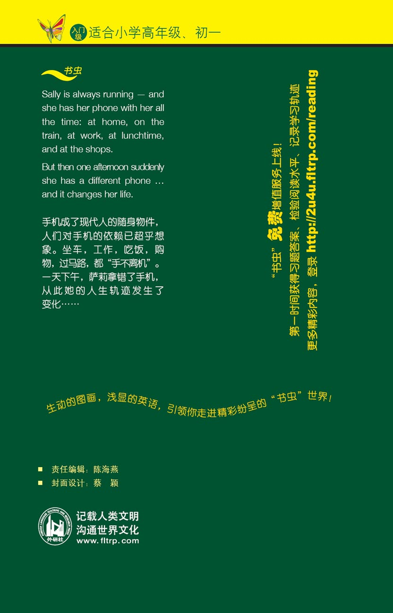